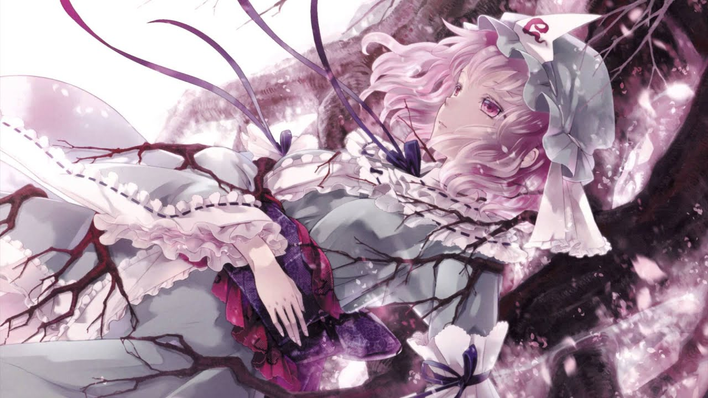
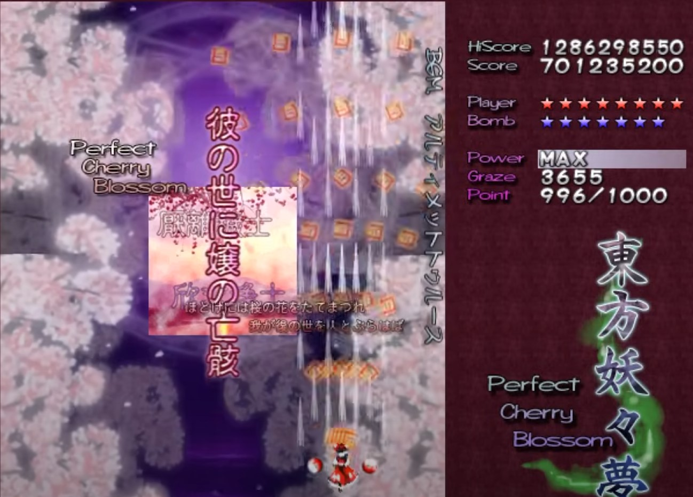

第一次听到这首歌还是友人安利，其原曲为东方妖妖梦的《幽雅に咲かせ、墨染めの桜～Border of Life》《さくらさくら～Japanize Dream…》，表达的是在成为亡灵之前的西行寺幽幽子的故事，决心将自己现身给西行妖前的内心独白。歌曲开头和结尾的和歌极富意境，加上自己也简单学习了一段时间古典日语的副助词，于是借此尝试一下曲中出现的和歌中使用的古典文法进行分析。
@ 仏 ほとけには さくらの@ 花 はなを たてまつれわが
@ 後 のちの@ 世 よを@ 人 ひととぶらはば
現代語訳：私が仏になったら桜の花を供えてほしい。もしも後の世に誰かが弔ってくれるのならば。
中国語訳：若我成佛，愿有人将樱花供奉于我。愿来世有人为我哀悼。
ことば：
@ 奉 たてまつる：他動詞ラ行四段活用。「やる」「おくる」の謙譲語。尊者に献上する。差し上げる。表示向尊敬的人奉上。这里表达对佛陀的敬意。@ 後 のち：之后。和「あと」一样表示时间上的以后，相比之下更为生硬。@ 弔 とぶらふ：他動詞ハ行四段活用。供養する、冥福を祈る。吊念死者。「とぶらはば」为未然形「とぶらは」＋「ば」表示順接仮定条件。
鑑賞：引用自円位法師 『千載和歌集』。円位法師即西行法师。西行法师为诗歌、旅行和樱花而生，也为之赴死。如果在他死后想起他，就请他献上樱花。如果有人像他一样热爱樱花，即使在他死后，也请用樱花来悼念他的未来。西行法师的诗将樱花托付给在他去世后依然活着的人。而在这首歌中西行寺幽幽子的原型为西行法师（幻想乡中为歌圣）之女，该和歌也出现在东方妖妖梦第六关首图的副标题处。

さもあれば
@ 惜 をしからざりし@ 命 いのちさえ
@ 花 はなの@ 色 いろにも@ 美 うつくしければ
現代語訳：そうであるならば、この命を捨てても惜しくない。桜の花の色にも、美しければいい。
中国語訳：如果是这样，我愿意放弃自己的生命也不觉得可惜。只愿花开之色，能够烂漫如期。
ことば：
- さも：然も。副詞。そうも。「さもあれば」表示 「如果是这样」。
@ 惜 をし：形容詞シク活用。现代语为「惜しい」，表示可惜。「惜しから」为「惜し」的補助活用的未然形。- ず：表示打消的助动词。接续为未然形，補助活用为「ざら・ざり・〇・ざる・ざれ・ざれ」。此处「ざり」为助动词「ず」的補助活用的连体形。
- き：表示体验过去的助动词。接续为连用形，活用为 「せ・〇・き・し・しか・〇」。此处「し」为助动词「き」的连体形。
鑑賞：这一段歌词引用了藤原義孝的诗，原句为『君がため 惜しからざりし 命さへ ながくもがなと 思ひけるかな』出自百人一首の50番，表达了幽会中对对方的浓烈的爱意，愿意为了爱情献出生命。在歌词中引用这段和歌表达的则是愿意为了西行妖的盛开献出自己的生命。
（剩下的和歌要么是分析过要么比较现代文，因此就仅给出中文翻译和部分词语解析）
@ 仏 ほとけには さくらの@ 花 はなを たてまつれ
@ 死 しなば@ 諸共 もろともみなうつくしく
中国語訳：若我成佛，愿有人将樱花供奉于我。令逝去之人，皆美丽永存。
さもあれば
@ 惜 をしからざりし@ 命 いのちさえそのはかなさのみ
@ 残 のこしては
中国語訳：如果是这样，我愿意放弃自己的生命也不觉得可惜。唯有虚幻，残留这尘世。
@ 仏 ほとけには さくらの@ 花 はなを たてまつれ
@ 死 ししても@ 叶 かなう@ 望 のぞみのあれば
中国語訳：若我成佛，愿有人将樱花供奉于我。如果有意，即便逝去亦能成真。
さもあれば
@ 惜 をしからざりし@ 命 いのちさえこの
@ 身 みも@ 永久 とわに うつくしく
中国語訳：如果是这样，我愿意放弃自己的生命也不觉得可惜。我这一副身躯，也能永远美丽。
@ 仏 ほとけには さくらの@ 花 はなを たてまつれわが
@ 後 のちの@ 世 よを@ 人 ひととぶらはば
中国語訳：若我成佛，愿有人将樱花供奉于我。愿来世有人为我哀悼。
さもあれば
@ 惜 をしからざりし@ 命 いのちさえせめて
@ 最期 さいごは@ 桜 はなの@ 下 した
中国語訳：如果是这样，我愿意放弃自己的生命也不觉得可惜。至少最后得以长眠于，这樱花之下。
ことば：
@ 諸共 もろとも：「～も一緒に」「とともに」といった意味です。一起。「死なば」是「死ぬ」的未然形，后接「ば」表示假定，如果死了的话。连起来也可以表示如果死了的话大家一起。@ 死 しす。自動詞サ行変格活用。现代较为少用。- はな：因为古文中「花」一般默认指的是樱花，类似于文言文中的「江」默认指的是长江一样，因此这里写作「桜」读作「はな」既符合文学常识，也能对上歌词韵律。
译后谈：
其实很早之前就对古文的文法有一定兴趣，最初的出发点还是源自于想要看懂歌词，那ボカロ曲和东方同人曲目不可避免会遇到难以理解的古文表达。这也成为了入门古典文法的契机，但依然在茫茫多的助詞/助動詞前搁置了。而后却发现想要看懂歌词中的古文并不需要对古文文法有全面的理解
（感慨到当时发送了一篇推文）
忽想找些古風日文歌做些品詞分解。却發現許多以古風見長的ボカロ曲與東方曲，其古語文法只是模仿古語的用言活用詞尾以營造出一種古風氛圍。而古語文法中佔大部分的古語助動詞只會用現代語仍殘存的「ず」「き」「ごとし」，遑論古語助詞，稍具深度的文言表達也只是原封不動借用百人一首等名篇，哎現代人
— 無情なタンヤオボット (@Persuader817) July 25, 2025
初次看到本首歌曲的歌词，本以为能够免俗，但还是发现依然没有超出”用言活用詞尾和現代語仍殘存助動詞”的范畴，原封不动引用典籍以外的原创部分依然是简单的现代文。不禁令人感慨真的能找到真正现代人原创的古风日文歌吗（